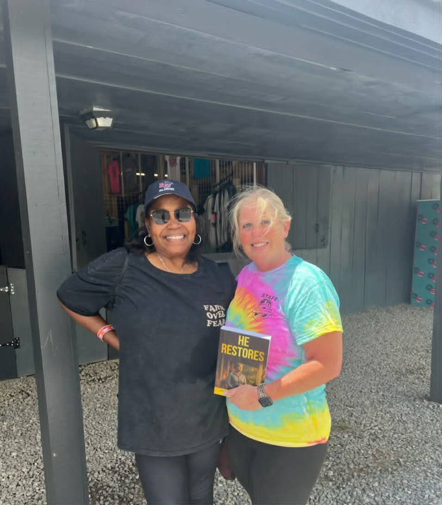
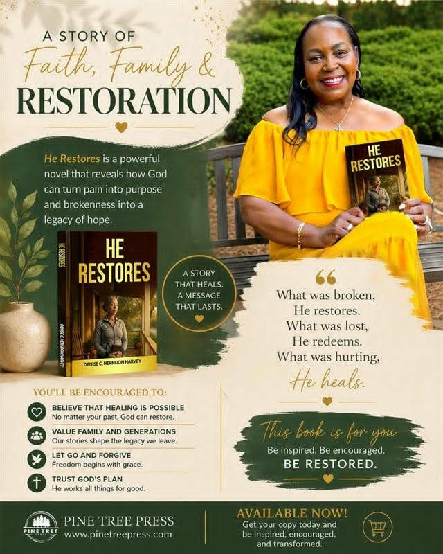

Media Gallery
 Fresh Off the Press
Fresh Off the Press
Television, Radio & Literary Events
Denise has been featured on television, radio, and podcasts, and her work has been showcased on the Disney Times Square digital billboard. She has appeared at the Tucson Festival of Books, LA Times Book Fair, and international book fairs in Seoul and London, along with the Readers Magnet Festival of Storytellers and the New York Library Association Annual Conference and Trade Show.
Liberty University
Fresh Off the Press
Speaking Event On-Air Interview

Featured Release